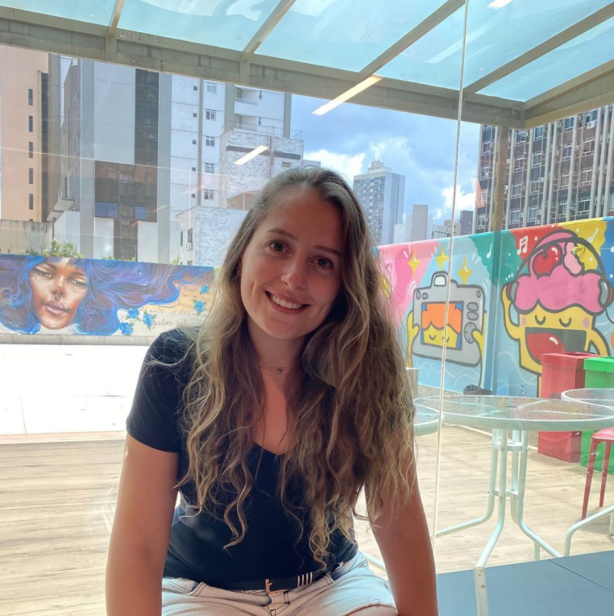
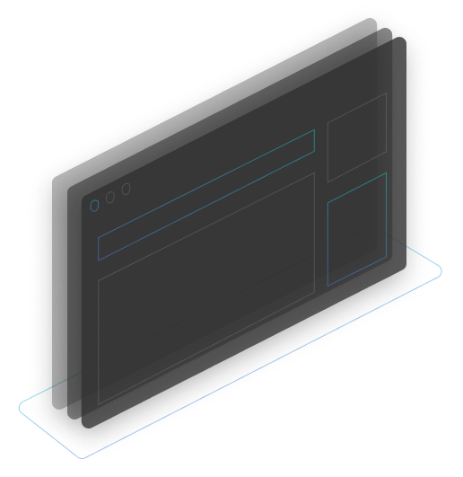

NomeIsadora Stangarlin
Idade26 anos
FormaçãoEngenharia Computação - UFSM 2018
CidadeSão Gabriel - RS
Telefone55 999999999
Emailisadora@gmail.com
FreelanceDisponível
Exphtml, css, js, Angular 7, Vue Js
IdiomasIngles (avançado)
Hello,
I am Isadora Stangarlin
Sou desenvolvedora frontend, com 3 anos de experiência. Já trabalhei com Angular e Vue Js em grandes projetos. Adoro aprender coisas novas e trabalhar em equipe.
Sobre mim
Gaúcha de 26 anos, trabalho como desenvolvedora frontend. Sou formada em engenharia de computação pela
Universidade Federal de Santa Maria. E desde 2018 trabalho com desenvolvimento frontend usando: html,
css, js. Atualmente trabalho com o framework Vue Js, mas tenho experiência com Angular e React também.
Sou muito criativa, adoro estudar sobre design, novas tecnologias e estou sempre pronta para um novo
desafio.

Serviços
Desenvolvimento de sites
Desenvolvimento de sites empresariais. Faça sua empresa ser facilmente encontrada online.
Desenvolvimento de aplicações web
Desenvolvimento de aplicações web como sistemas de gerenciamento, feito sob medida.
Criação de layouts
Criação de protótipos de interfaces web e mobile para validar sua ideia antes de por em prática.
Portifólio

- HTML
- CSS
- JS
Linktree
Projeto feito usando html, css e js com o objetivo de ser um agrupador de links para o instagram.
- HTML
- CSS
- JS
Linktree
Projeto feito usando html, css e js com o objetivo de ser um agrupador de links para o instagram.
- HTML
- CSS
- JS
Linktree
Projeto feito usando html, css e js com o objetivo de ser um agrupador de links para o instagram.
Curriculum

Vamos trabalhar juntos?
Se você gostou do meu trabalho e quer que eu tire sua ideia do papel ou faça parte do seu time, entre em contato comigo!